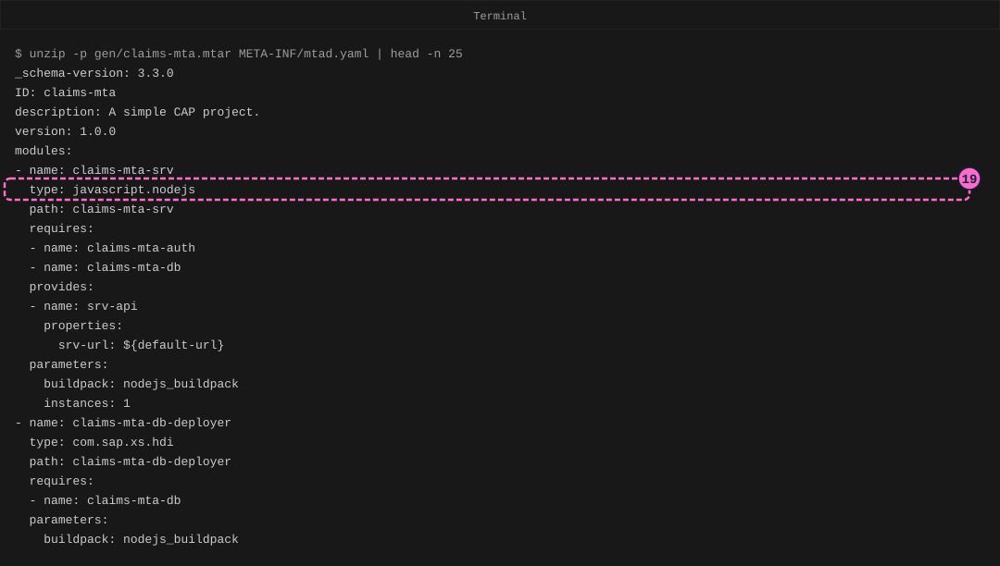
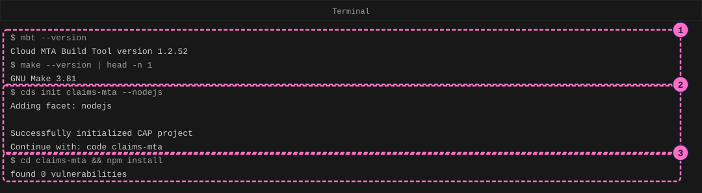
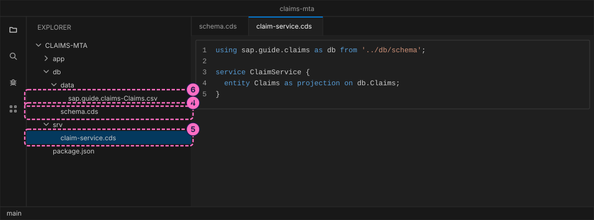
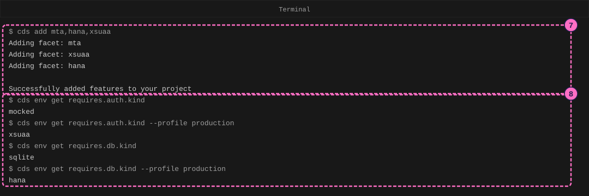
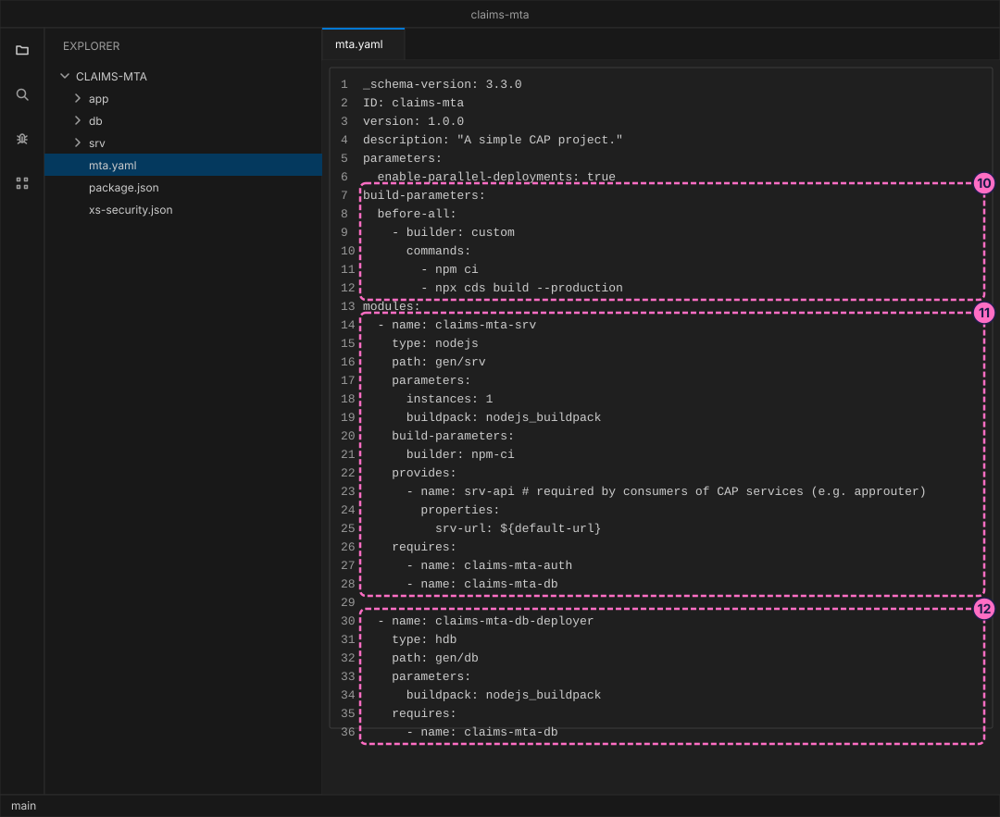
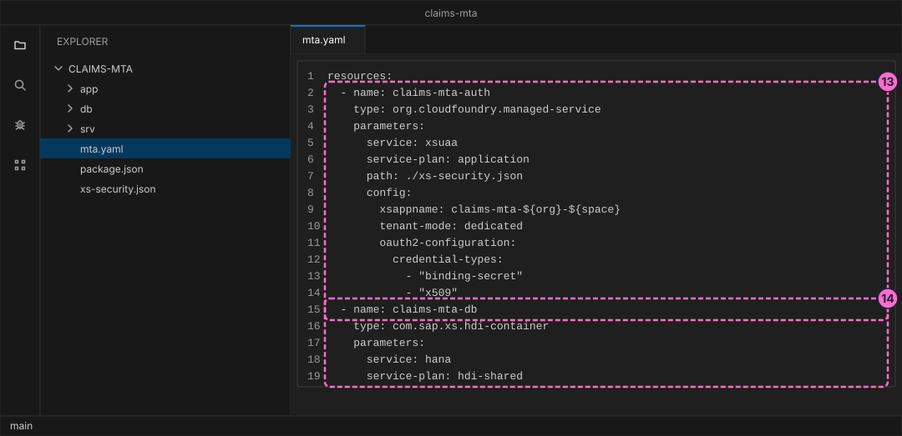
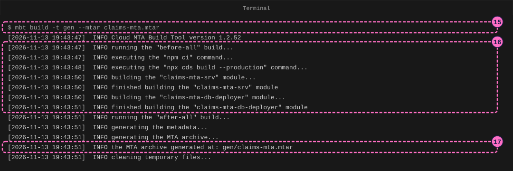
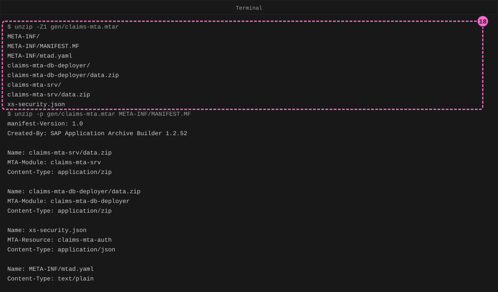

SAP Guide: Package a CAP App as an MTA Archive
|
This content was generated with the assistance of AI and should be verified against the official documentation before being relied on in production. |
Checked on 2026-11-13 against CAP Node.js 10.2 (@sap/cds 10.2.2, @sap/cds-dk 10.2.1), Cloud MTA Build Tool (mbt) 1.2.52, GNU Make 3.81 and Node.js 24.21.
What you build
This is a teaching model built with CAP. It is not SAP S/4HANA or SAP SuccessFactors and does not reproduce their screens.
You take a small expense-claim service and prepare it for SAP BTP without going there. The CAP command line writes a deployment descriptor, mta.yaml, that names the parts of the application (a server, a database deployer) and the services it needs (a SAP HANA Cloud database container and an XSUAA login service). You read that file, and then the Cloud MTA Build Tool packs everything into one archive, an MTA archive (.mtar), on your own computer. You open the archive and read the descriptor that deployment would use. Nothing is deployed: no Cloud Foundry login, no SAP BTP account and no SAP HANA Cloud database are involved.

Before you start
-
No account is needed: the tools install from the public npm registry without signing in. Installing
@sap/cds-dkand@sap/cdsmeans accepting the SAP Developer License Agreement, version 3.2, which the packages state themselves;mbtis licensed under Apache-2.0. Thembtpackage downloads the program file of the build tool from a public release page of the project when npm installs it, which needs no login either. The lab README names the licenses. -
Install Node.js 22.12 or newer.
node -vprints the version. -
Install GNU Make. macOS and Linux usually have it already (
make --versiontells); on Windows install it as well, because the CAP guide for Cloud Foundry asks for it next tombt. -
You need a tool that reads ZIP files for the last steps. The command
unzipis used below; an MTA archive is a ZIP file. -
Use a code editor such as Visual Studio Code, and a terminal.
-
Read Deploying CAP: HANA, XSUAA and MTA first, or at least know what a deployment descriptor is. The CAP project here is built the way the guide Your First CAP Service builds its project; if the editor or the
cdscommand is new to you, start there. The screen map of that guide labels the regions of the editor used here. -
The figures are drawings of the editor and the terminal, not screenshots. A highlighted box with a number marks the file, the line or the command of the step with the same number. The file names and the sizes in the archive come from one run; yours may differ in small details such as time stamps and file sizes.
Steps
Prepare the tools and the project
-
Install the two command line tools once:
cdsfor CAP andmbtfor the build. Then ask each for its version, and check thatmakeexists:npm install --global @sap/cds-dk mbt@1.2.52 mbt --version make --version | head -n 1mbt --versionanswersCloud MTA Build Tool version 1.2.52. If it prints nothing, see the table at the end. -
Create the project. The option
--nodejschooses the JavaScript runtime of CAP:cds init claims-mta --nodejs -
Go into the folder and install the dependencies. Open the folder in your editor (in Visual Studio Code,
code .).cd claims-mta npm install
Describe a small service
The packaging works on any CAP project; a small one keeps the files short. The model is the claim from the first guide, with its own names.
-
Create the file
db/schema.cds. It imports the building blockscuid(a generated keyID) andmanaged(the fieldscreatedAt,createdBy,modifiedAtandmodifiedBy) and describes the entityClaims:using { cuid, managed } from '@sap/cds/common'; namespace sap.guide.claims; entity Claims : cuid, managed { title : String(80); status : String(1) default 'N'; amount : Decimal(9,2); }Source: CAP: Domain Modeling
-
Create the file
srv/claim-service.cds. The serviceClaimServiceoffers the entity to outsiders as an OData service:using sap.guide.claims as db from '../db/schema'; service ClaimService { entity Claims as projection on db.Claims; } -
Create the folder
db/dataand in it the filesap.guide.claims-Claims.csv. The name is the namespace, a dash and the entity name. CAP loads the file into the database when the server starts, and the build later turns it into SAP HANA content:ID,title,status,amount 11111111-1111-1111-1111-111111111111,Train ticket,N,45.50Source: CAP: Providing Initial Data

Add the deployment files
-
Ask CAP for the three facets in one command.
mtawrites the deployment descriptormta.yaml,hanaprepares the project for SAP HANA Cloud as the production database andxsuaaprepares it for XSUAA logins:cds add mta,hana,xsuaaThe command lists the three facets and changes the project in four ways. It writes
mta.yaml. It writesxs-security.json, the description of the roles and scopes of the application; the model has no authorization rules, so the file is real but empty ({"scopes": [], "attributes": [], "role-templates": []}). Inpackage.jsonit adds the dependencies@cap-js/hanaand@sap/xssec, and the development dependency@sap/cds-dk, which the build needs. It also adds acdsblock that sets the login toxsuaain theproductionprofile only. This command only edits files: it connects to nothing. -
Check that development has not changed. A CAP profile is a named set of settings, and
cds envprints the setting that is in effect. Ask for the login and the database, with and without the profileproduction:cds env get requires.auth.kind cds env get requires.auth.kind --profile production cds env get requires.db.kind cds env get requires.db.kind --profile productionWithout the profile the answers are
mockedandsqlite, the development settings you used before. With--profile productionthey arexsuaaandhana. The same project is therefore two applications: the one on your computer and the one that the archive will start in the cloud.
Source: CAP: Deploy to Cloud Foundry
Read the deployment descriptor
-
Open
mta.yaml. This is the complete file thatcds addwrote, unchanged:_schema-version: 3.3.0 ID: claims-mta version: 1.0.0 description: "A simple CAP project." parameters: enable-parallel-deployments: true build-parameters: before-all: - builder: custom commands: - npm ci - npx cds build --production modules: - name: claims-mta-srv type: nodejs path: gen/srv parameters: instances: 1 buildpack: nodejs_buildpack build-parameters: builder: npm-ci provides: - name: srv-api # required by consumers of CAP services (e.g. approuter) properties: srv-url: ${default-url} requires: - name: claims-mta-auth - name: claims-mta-db - name: claims-mta-db-deployer type: hdb path: gen/db parameters: buildpack: nodejs_buildpack requires: - name: claims-mta-db resources: - name: claims-mta-auth type: org.cloudfoundry.managed-service parameters: service: xsuaa service-plan: application path: ./xs-security.json config: xsappname: claims-mta-${org}-${space} tenant-mode: dedicated oauth2-configuration: credential-types: - "binding-secret" - "x509" - name: claims-mta-db type: com.sap.xs.hdi-container parameters: service: hana service-plan: hdi-sharedSource: real
mta.yamlwritten bycds add mta,hana,xsuaa(CAP command line tools 10.2.1); the descriptor elements are defined on SAP Help: Multitarget Applications in the Cloud Foundry EnvironmentA multitarget application (MTA) is one application made of several parts that are built and deployed together. The file lists modules (the parts that run) and resources (the services they need, which the platform creates). The next steps read it from the top.
-
Read the header, lines 1 to 12.
IDandversionname the application. Thebefore-allblock underbuild-parametersholds two commands thatmbtruns once, before it builds any module:npm ciinstalls the exact versions ofpackage-lock.json, andnpx cds build --productionturns the CDS model into the foldersgen/srvandgen/dbthat the modules point at. -
Read the module
claims-mta-srv(line 14 on). It is the CAP server:type: nodejs, built fromgen/srv, started with the buildpacknodejs_buildpackas one instance. Itprovidesa value namedsrv-api(its own URL, written as${default-url}, a placeholder that the platform fills in) so that other modules, such as an application router, could find it, and itrequiresthe two resourcesclaims-mta-authandclaims-mta-db. Arequiresentry also means that the platform creates the resource before it starts the module. -
Read the module
claims-mta-db-deployer(line 30 on). Its typehdband its pathgen/dbsay that it is a small application whose only job is to push the generated database files into the database container. It requiresclaims-mta-db.
-
Read the resource
claims-mta-auth(the lineresources:and below). Its typeorg.cloudfoundry.managed-serviceand the pairservice: xsuaaandservice-plan: applicationask the platform for an XSUAA instance.path: ./xs-security.jsonhands it the file thatcds add xsuaawrote, andxsappnameis the application name that XSUAA knows, made unique per organization and space by the placeholders${org}and${space}. -
Read the resource
claims-mta-db. The typecom.sap.xs.hdi-containerwithservice: hanaandservice-plan: hdi-sharedasks for an HDI container: a private schema inside SAP HANA Cloud that the database deployer fills.
The figure shows the file from the line
resources:on; its line numbers start at 1 for that part.
Build the archive
-
In the terminal, in the project folder, build the archive.
-t genputs the result in the foldergen, and--mtarnames the archive:mbt build -t gen --mtar claims-mta.mtar -
Read the log.
mbtfirst runs thebefore-allcommands of the descriptor (npm ci, thencds build --production, which prints the files it wrote belowgen). Then it builds each module in the order of the descriptor: for each one it installs the production dependencies of that module and packs the result. The log ofmbtand of the commands it starts is long, because it prints the output of npm and of the CAP build; the figure keeps the lines ofmbtitself and leaves out the lines that hold paths. -
The last lines name the archive:
the MTA archive generated at: gen/claims-mta.mtar. The file is a few megabytes, mostly the installed Node.js packages of the two modules.
Source: Cloud MTA Build Tool: Usage; the flag combination is the one in CAP: Deploy to Cloud Foundry
Look inside the archive
-
List the entries of the archive.
-Z1prints only the names; the names that end with a slash are folders:unzip -Z1 gen/claims-mta.mtar unzip -p gen/claims-mta.mtar META-INF/MANIFEST.MFThere is one
data.zipper module (the packed server and the packed database deployer), the filexs-security.jsonfor the XSUAA resource, and aMETA-INFfolder with two descriptions. The second command printsMANIFEST.MF, which says which entry belongs to which module or resource.
-
Print the start of the deployment descriptor
META-INF/mtad.yaml.mbtderived it frommta.yaml:unzip -p gen/claims-mta.mtar META-INF/mtad.yaml | head -n 25It is the same model with resolved details: the module type
nodejsbecamejavascript.nodejs,hdbbecamecom.sap.xs.hdi, and eachpathnow names the packed module (claims-mta-srv) instead of a source folder (gen/srv). Thebefore-allcommands and thebuild-parametersstay in the file as a record; they were used on your computer and play no part in the cloud. This is the file that the deployment service would read, and it is the figure at the top of this page.
Check the result
-
mbt buildended without a line that starts withERROR, and the foldergenholdsclaims-mta.mtar. -
unzip -Z1 gen/claims-mta.mtarlistsMETA-INF/mtad.yaml, onedata.zipforclaims-mta-srv, one forclaims-mta-db-deployerandxs-security.json. -
mtad.yamlnames two modules and two resources, the same asmta.yaml.
Nothing was deployed, so there is no running application. This is what the next step, deployment, would do, and it needs an SAP BTP account, so it is described and not run. Requires an SAP BTP account; not run here. The CAP guide for Cloud Foundry says that the archive is deployed with the Cloud Foundry command line client and its multiapps plugin, after a login and the choice of an organization and space: cf deploy gen/claims-mta.mtar -f sends it to the SAP Cloud Deployment service (the guide’s example names the file mta.tar; the file name is only what you gave --mtar). That service reads mtad.yaml, creates the XSUAA instance and the HDI container that the two resources ask for, uploads the packed modules, runs the database deployer so that the tables and views of the model exist in the container, and starts the server with both services bound to it. The page Deploying CAP: HANA, XSUAA and MTA walks through that step with its commands. The archive you built is the same kind of file; the difference is that this project has no application router and no user interface.
Variations
-
Check that the development setup still works. The packaging changed only files that development ignores. Add the test dependency with
npm install --save-dev @cap-js/cds-test, create the filetest/service.test.jsand runnpm test:import cds from '@sap/cds' import { test } from 'node:test' import assert from 'node:assert' const { GET } = cds.test(import.meta.dirname + '/..') test('lists the claim from the CSV file', async () => { const { data } = await GET('/odata/v4/claim/Claims') assert.strictEqual(data.value.length, 1) assert.strictEqual(data.value[0].title, 'Train ticket') })The test starts the service with the development settings, so it uses SQLite and the mocked login, and reads the claim from the CSV file. The run prints
ℹ pass 1andℹ fail 0. -
Read the generated database files. After the build the folder
gen/db/src/genholds the tablesap.guide.claims.Claims.hdbtable(COLUMN TABLE sap_guide_claims_Claims, withamount DECIMAL(9, 2)) and the viewClaimService.Claims.hdbviewthat selects from it. The database deployer hands these files to SAP HANA Cloud.
What can go wrong
| Symptom | Cause | Fix |
|---|---|---|
|
npm skipped the install script of |
Run |
The build stops in the before-all step with an |
The |
Run |
The build stops with |
The resource |
Run |
|
GNU Make is not installed (not produced here; macOS and Linux have it). |
Install GNU Make, as the CAP guide asks for Windows. |
Clean up
The build writes only into the project folder. Delete the folder gen (it holds the archive and the generated folders) when you no longer need it; cds build and mbt build write it again. The folder claims-mta is yours to keep. Nothing was created outside your computer.
Where to go next
-
Next guide: Consume an SAP API Specification in CAP.
-
Reference: Deploying CAP: HANA, XSUAA and MTA.
-
Reference: XSUAA and Identity on SAP BTP.
-
Reference: Cloud Foundry and Kyma Environments.